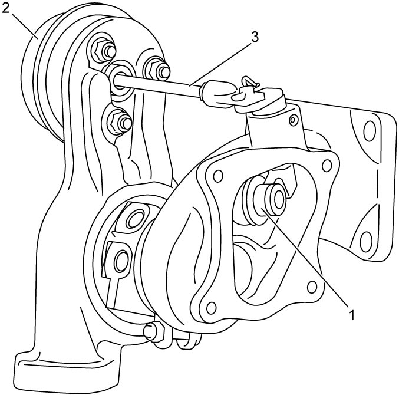
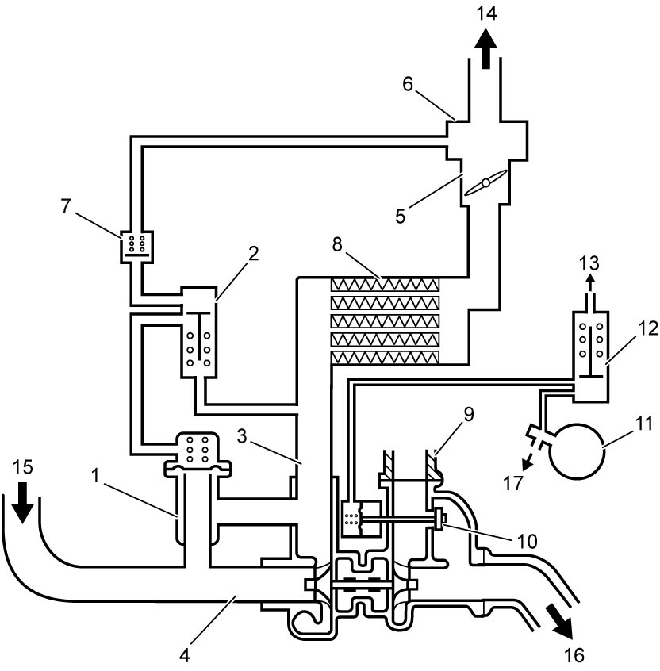

1D
| Turbocharger Description |
Turbocharger System
The turbocharger system consists of a turbocharger, intercooler which cools pressurized air for increasing the volume density and charging efficiency, waste gate valve to control exhaust gas flow for optimum supercharge and air bypass valve.
Turbocharger
The turbine / compressor shaft is supported with floating metals lubricated by pressurized engine oil from the main oil gallery through an oil union bolt providing mesh filter and responds to extremely high revolution.
Waste Gate Valve Function
The waste gate valve (1) incorporated in the turbocharger is controlled by ECM with WGV-VSV using negative pressure from the vacuum pump. The valve is open as an initial state and at the time of the engine start, exhaust gas passes both turbocharger turbine and waste gate. And, when negative pressure is transmitted from the vacuum pump to the waste gate valve actuator (2), the waste gate valve actuator rod (3) pulls to close the valve if necessary in response to a demand for the supercharge i.e. engine power.

 "Expand image")
Air Bypass Valve Function
Air bypass valve (1) is opened by operation of ABV-VSV (2) to relief compressed intake air from turbocharger outlet side (3) to inlet side (4) when throttle valve (5) is closed suddenly while the vehicle is running with wide open throttle. The open function of the air bypass valve releases the air pressure for an instant and restrains air surge noise.

 "Expand image")
| 6. | Intake manifold | 12. | WGV-VSV |
| 7. | Check valve | 13. | To air cleaner |
| 8. | Intercooler | 14. | To cylinder |
| 9. | Cylinder head (Exhaust manifold) | 15. | From air cleaner |
| 10. | Waste gate valve | 16. | To catalytic converter |
| 11. | Vacuum pump | 17. | To brake booster |